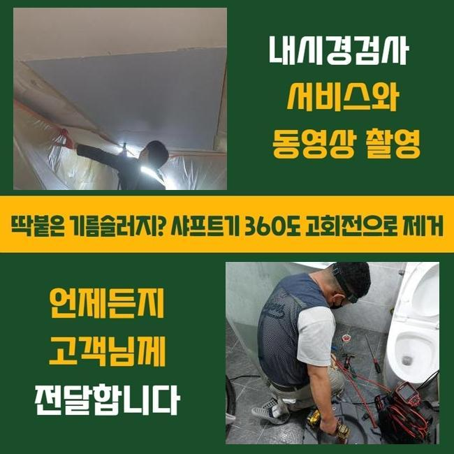
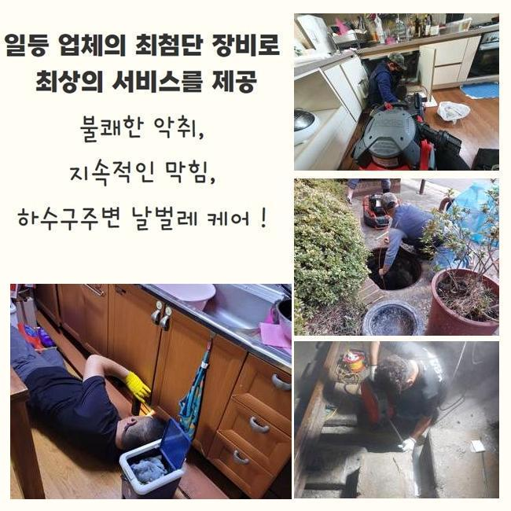
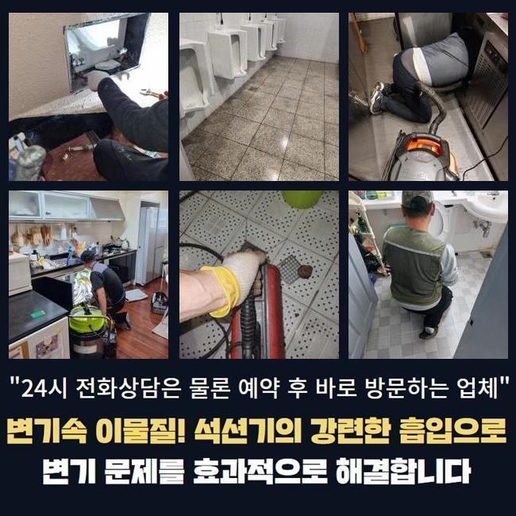
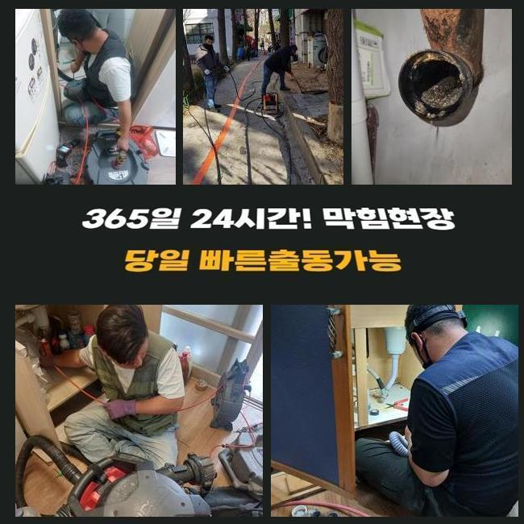
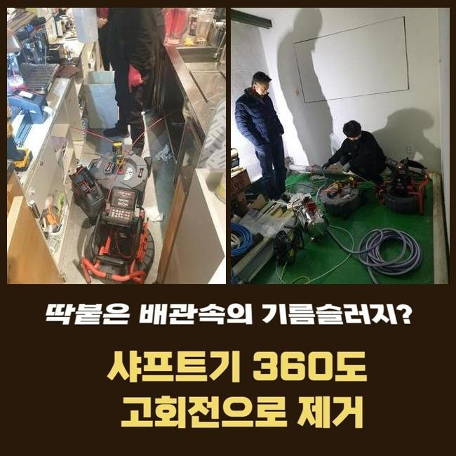
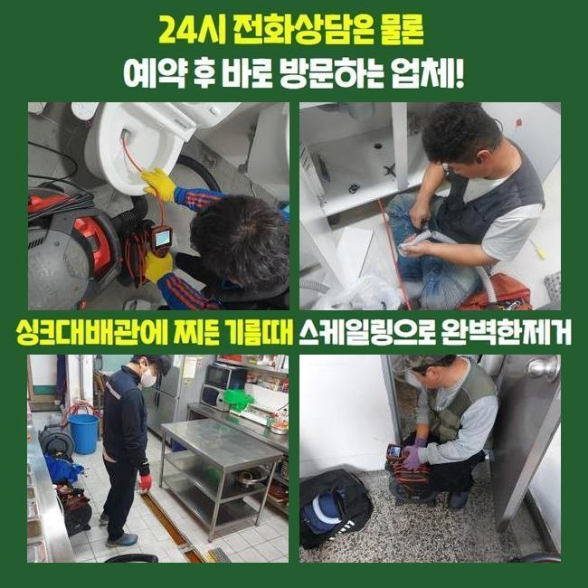

🏠 신장동씽크대막힘 원동 하수구뚫어주는곳 설비공사
용인 신장동 싱크대막힘 전문 시공 후기

📋 작업 개요
- 위치: 용인 신장동, 신장동, 용인
- 서비스 유형: 싱크대막힘, 하수구막힘, 배관막힘, 누수수리, 뚫는업체, 배관청소, 설비공사, 악취차단
- 작업 일시: 2025. 6. 4. 5:15
- 업체명: 하수구수사대 (010-5615-2118)
🔍 문제 상황
오늘 장소는 부엌 싱크 시설에서 물이 술술 내려가지 못하고 속에서 범람하기도 하는 증상을 수습한 사례를 작성해 보려고 합니다
싱크대물이 멈추는 일은 모든 집에서 빠짐 없이 활용하는 도중에도 단골로 발생되는 문제 중 하나
입니다
이를 내버려 둔다면 물 침수도 일어나는 등의 연속적인 어려움을 초래하고 배수로에 상처가 나는 일까지 연결될 수도 있습니다
신장동씽크대막힘 원동 하수구뚫어주는곳 설비공사
어떤 문제인지 보니 물이 나가는 길이 막히면서 물 흐름이 둔화된 채 아래로 이동하다가 안의 물까지 나오면서 주변이 엉망이 되어버린 상황임이 눈에 보였습니다
고객님은 막힘을 인지하고 손쉬운 방법으로 정상화가 될 수 있을 것이라 굳게 믿으셔서 배관을 뚫는 각종 도구와 고온수까지도 일부러 붓기도 했는데도 그럼에도 불구하고 문제는 복구되지 않았다 합니다
주변 지인에게 소개받고 방문을 요청해주셨고 작업지데 간 후에는 어떤 문제 때문인지를 제대로 알아차리고자 배관에 대한 상세 검사를 착수해 봤습니다
비정상적으로 작동하는 배관의 컨디션을 따져보니 협소한 배관의 가장자리에 크고 작은 음식쓰레기와 층층이 자리한 기름때가 하나로 뭉쳐진 채 말라붙은 모습이었어요
점진적으로 내려가보니 윗 쪽만 그런 게 아니고 깊숙한 깊이까지 배관의 전반적인 부분에 무수한 찌꺼기들이 집적된 모양새였습니다

🔎 원인 분석
💡 전문가 진단: 정밀 진단 장비를 사용하여 슬러지의 고착 여부를 판명하고 타격/세척 작업을 실시했습니다.
하수구 청소를 받는 대신에 배수구 덮개와 망을 별도로 쓰지 않고 설거지하려 물을 쓰신 적이 많았던 것 같다 하셨어요
따로 처리되지 못한 기름과 음식잔여물들이 배수관로로 버려지듯 내려간 것으로 추정됐어요
이러한 반복적 문제는 신규가 아닌 배수관에서 대부분 형성되며 조속한 대처가 적극적으로 이뤄지지 못하면 파이프라인 전체를 리뉴얼해야 할 수준으로 사안이 나빠질지도 모릅니다
본격적인 청소를 하기 전 입구 근방의 찌꺼기를 덜어내려고 석션기를 활용해서 흡입을 시도했는데요
이런 석션 단계는 바닥과 가까운 측면과 중간에 이르기까지 놓여있는 차단 물질들을 처리하는 부분에 있어서 강점이 있고 해당 배수관이 가진 상태를 진단하는 데에 뒷받침할 근거를 마련해줍니다
배수관 시작점부터 모든 이상 물질들을 끌어올려 가면서 수돗물이 이동할 수 있는 길을 만들었는데 석션의 힘으로는 전적인 문제점들을 교정하는 것이 까다로울 때가 많아요
진입로를 형성하고 전용 카메라를 작동하여 내부 현황에 대하여 자세히 보았습니다
라이트가 달린 내시경으로 긴 배관의 전반을 상세하게 살펴보았는데상당한 깊이에 이르기까지 잔뜩 쌓인 기름층이 딱딱하게 메마른 것을 눈으로 보게 됐습니다
석션으론 수습이 힘든 찌꺼기를 분리하는 작업이 필요하여 회전력이 우수한 샤프트 기계를 응용하기로 했습니다
샤프트는 파이프 안쪽 면적에 장시간 누적되었을 부피가 크고 딱딱한 이물질을 파편으로 작게 쪼개주며 배관 속을 확실하게 차단하고 있는 끈적한 요소일지라도 회전하며 긁어내게 됩니다

🔧 작업 과정
샤프트 가동이 이뤄지면서 가로막혔던 배수로가 청량해졌고 멈췄던 물의 배수속도도 점차 발전하는 모습을 느끼게 됐습니다
샤프트 단계를 완수하고 석션의 흡입 기능을 켜서 파편화된 부유물을 흡입 처리해서 파이프 내면을 완전무결한 모습으로 되돌려줬어요
작업을 하다 보니 싱크대 구멍과 이어진 주름호스 역시 심한 불순물이 붙어있더라고요
특히 배수통은 장기간 사용하게 되면서 내부가 녹슬고 부식된 모습이었고 주름관은 접합부 영역에서 물기가 흘러나와서 악취까지 확산시키는 중이었어요
현재상태를 소상히 말씀드리고 기존 주름배관과 배수통 일체를 새 제품으로 바꿔 달아드렸습니다
깨끗하게 바꿔 달고는 윗부분부터 차례로 카메라로 꼼꼼하게 살펴보니 교체한 내역들이 멈춤 없이 돌아갔고 수돗물도 빠른 속도로 빠져나가게 됐음을 재확인하게 됐습니다
작업을 쭉 지켜보셨던 고객님에게 배수구의 케어가 필요하단 것을 재차 강조했어요
요리하는 주방에서 식용유가 흥건한 식기를 씻을 때는 필수적으로 거름망을 두고 사전에 과한 기름기가 있다면 관리하는 패턴을 체득하는 게 바람직합니다
간과하지 말고 배수구 정화작업을 하고 전문 업체의 도움으로 수시로 들여다보는 것이 장기적인 배관 사용을 위해 긍정적인 효과를 제공합니다
경험을 공유하자면 최근에 고쳐드렸던 작업지에서는 배수구 속이 아니라 부속품 중 하나인 배수통 이음새가 있는 쪽에서 물샘이 생겨버린 증세도 고쳐드린 적 있어요
싱크대가 고장났을 때도 여러가지 방향으로 문제가 도래할 수 있으니 정교한 분석을 우선해야 할 것입니다
배수경로가 막히는 현상과는 다르게 누수가 무서운 이유는 싱크대가 설치된 밑이 축축하게 젖어버려 곰팡이나 부식이 빚어질 가능성이 있습니다
더 사태가 심해지면 나무로된 가구도 망가져버릴 수 있으니 하루빨리 조치를 실시하는 편이 좋아요
오늘의 현장에서도 특화된 카메라와 가장 잘맞는 청소도구를 접목해서 배관을 물길을 내어주었고 누수증세가 벌어지지 않게 부속을 미리 교환해서 통수를 회복시켰어요
싱크대가 막히고 새는 상황이 눈에 보인다면 곧장 청소에 돌입하는게 정답이라고 말할 수 있어요
물이 느리게 흘러가고 악취가 스믈스믈 풍겨나오면 배수관 어딘가에서 노폐물이 잔뜩 쌓여있을 것으로 추론할 수 있습니다


✅ 작업 완료
금방 뚫리지않을까 내버려두면 시간이 경과하면서 장애요인이 되는 이물질이 성장하게 되며 화석 마냥 딱딱해져요
배관 벽체에 꽉 들어차서 갈라짐이 발생하면 길게 이어진 배관을 다 바꿔야 하는 사태가 초래될 수 있어요
시공의 처음과 끝에 이르기까지 실시간으로 화면을 살펴서 진행도를 보고 있으며 막힘의 근원이 무엇인지 판단하고 제일 도구와 방법을 설정하여 정화 작업을 해줍니다
궁금하신 부분은 답변드리고 공사하는 내역에 대해서 밝히고 있고 재막힘을 예방하는 관리법에 관한 부분도 도움을 드리고 있으니 싱크대에 이상이 생기면 전화를 걸어주시기를 바랍니다




⚠️ 베란다 누수 및 방수 관리 방법
- ✅ 비가 많이 올 때 창틀 주변이나 아래층 천장에 얼룩이 생기는지 정기적으로 확인해 보세요.
- ✅ 우수관 주변 실리콘 마감이 들뜨거나 깨진 틈새가 있는지 손상 여부를 수시로 체크하세요.
- ✅ 베란다 바닥 타일의 줄눈(메지)이 소실되면 그 틈으로 물이 침투하여 누수가 유발됩니다.
- ✅ 누수 의심 증상 발견 시 방치하면 아래층 손실이 커지므로 즉시 전문가의 진단을 받으십시오.
💡 핵심 정리
- 확실한 장비 작업(내시경 점검 및 샤프트 스케일링)으로 원인을 뿌리 뽑습니다.
- 작업 후 1년 이내에 동일한 부위 재발 시 100% 무상 A/S 서비스를 보장합니다.
- 서울 · 경기 · 인천 전 지역에 24시간 언제든 긴급 출동할 수 있도록 항시 대기 중입니다.
❓ 자주 묻는 질문 (FAQ)
🚨 용인 신장동 싱크대막힘 문제로 고민이신가요?
정확한 원인 진단과 확실한 시공으로 재발 없는 해결을 약속드립니다.
24시간 긴급 출동 | 서울 · 경기 · 인천 전지역 | 1년 내 재발 시 무상 A/S